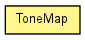

toxi.color
Class ToneMap
java.lang.Object
 toxi.color.ToneMap
toxi.color.ToneMap
public class ToneMap
- extends java.lang.Object

|
Constructor Summary |
ToneMap(float min,
float max,
ColorGradient gradient)
|
ToneMap(float min,
float max,
ColorList c)
|
ToneMap(float a,
float b,
ReadonlyTColor colA,
ReadonlyTColor colB)
|
ToneMap(float min,
float max,
ReadonlyTColor colA,
ReadonlyTColor colB,
int res)
|
| Methods inherited from class java.lang.Object |
equals, getClass, hashCode, notify, notifyAll, toString, wait, wait, wait |
map
public toxi.math.ScaleMap map
colors
public ColorList colors
ToneMap
public ToneMap(float min,
float max,
ColorGradient gradient)
ToneMap
public ToneMap(float min,
float max,
ColorList c)
ToneMap
public ToneMap(float a,
float b,
ReadonlyTColor colA,
ReadonlyTColor colB)
ToneMap
public ToneMap(float min,
float max,
ReadonlyTColor colA,
ReadonlyTColor colB,
int res)
getARGBToneFor
public int getARGBToneFor(float t)
getToneFor
public ReadonlyTColor getToneFor(float t)
setMapFunction
public void setMapFunction(toxi.math.InterpolateStrategy func)